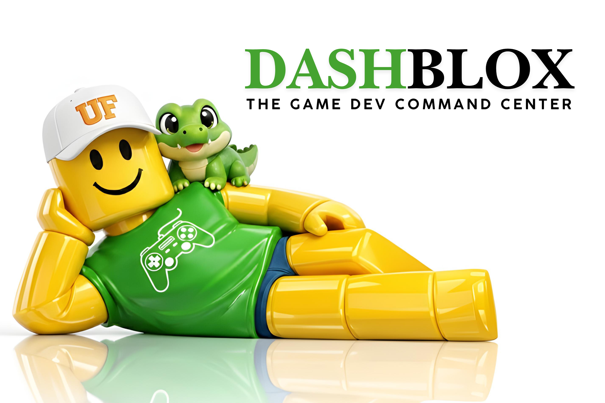

DashBlox
An AI-native game production platform that consolidates fragmented development tools into a unified workflow - a faster way to develop games.

The Problem
Game developers constantly jump between disconnected applications for 3D assets, audio, planning, documentation, and implementation. This fragmented workflow slows down production and makes it harder for teams to collaborate efficiently.
The Solution
DashBlox is a unified platform that brings everything together. Teams can generate custom 3D meshes, create game-ready sound effects and voices, manage production through an integrated Trello-style board, and maintain living project documentation - all within one interface.
Features
- Models - Generate 3D meshes with prompt enhancement via Gemini and multi-provider generation with format conversion
- Converter - Prepare assets for game engines with automated conversion pipelines
- Audio - Create SFX, text-to-speech, and voice cloning via ElevenLabs integration
- Docs - Maintain an editable project knowledge base for your team
- Board - Manage workflow with a built-in kanban board
Technologies
Node.js
MongoDB
Gemini API
ElevenLabs
Meshy
Replicate
Vultr
OpenRouter
Luau
Team
Luana Kunzler Maldaner
Matheus Kunzler Maldaner
Andrew Vu